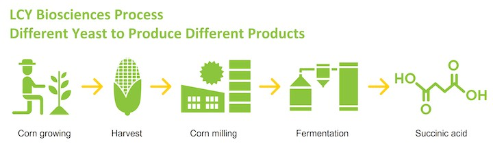

Tze-Luen Lin, Deputy Executive Director of the Office of Carbon Reduction, and Vincent Liu, Chief Executive Officer of LCY Chemical, discuss what businesses can do to address the carbon neutrality wave.
Tze-Luen Lin, Deputy Executive Director of the Office of Carbon Reduction, and Vincent Liu, Chief Executive Officer of LCY Chemical, discuss what businesses can do to address the carbon neutrality wave.
While carbon neutrality has become a global consensus, Tze-Luen Lin, Deputy Executive Director of the Office of Carbon Reduction, and Vincent Liu, Chief Executive Officer of LCY Chemical, share their thoughts on how Taiwan can keep up with the green push and strive for the circular economy.
More than 130 nations have now pledged to achieve carbon neutrality by 2050. In July, the European Union announced the Carbon Border Adjustment Mechanism (CBAM), or carbon tariff. What profound changes will the race for carbon neutrality bring about for Taiwan's petrochemical industry, a cornerstone supporting consumer and high-tech businesses? How will carbon neutrality propel the industry to become high-value? And how can a company turn the carbon neutrality commitment into its core competitive edge?
Carbon Neutrality Accelerates Business Transition
"The CBAM is a manifestation of traditional carbon pricing. It will have a massive global impact, creating carbon-driven trade barriers and even another wave of trade tension. This is something we all need to watch out for," Tze-Luen Lin, Deputy Executive Director of the government agency the Office of Carbon Reduction comments on the global urgency of carbon neutrality. As many companies around the world have embraced carbon pricing, having the right mindset is more critical than ever, in his view. Carbon neutrality should be considered more a competitive edge, not just social responsibility, and companies need to change their strategic thinking, he adds.
 Tze-Luen Lin highlights the importance of the circular economy as the world aims for carbon neutrality.
Tze-Luen Lin highlights the importance of the circular economy as the world aims for carbon neutrality.
LCY Chemical, with over ten years of carbon reduction experience, has turned carbon neutrality into a business strength and accelerator for business transformation. Vincent Liu, Chief Executive Officer of LCY Chemical, notes, "We are committed to protecting the environment by developing green products and reducing reliance on petrochemical raw materials."
For example, LCY Chemical makes bio-based succinic acid by fermenting corn syrup. The result of this microbial breakdown is a 100% natural chemical product that can be made into bio-based plastics. Fully degradable in soil and ocean water, these plastics put less burden on the planet. "Bio-based succinic acid is now mostly used to create the inside coating of paper cups. Another important application is shoe materials, which helps reduce our carbon footprint," Liu says.
LCY Biosciences, an LCY Chemical subsidiary, uses proprietary yeasts and fermentation processes to produce bio-based succinic acid, one of the group’s approaches to the circular economy.
Circular Economy Essential to Net Zero
Lin echoes LCY Chemical's green philosophy, indicating that carbon neutrality and the circular economy, both nascent trends, complement each other really well. "I think LCY's bio-based solutions are a fantastic example," he says. "From raw materials all the way to the final carbon footprint of production, the environment is a primary consideration." He adds that today's sharing economy (cars, furniture, and a wide range of products) shares similar principles with the circular economy, including expanding the lifecycle of everyday items. Product-as-a-Service (PaaS), another critical concept of the circular economy, is also evident in LCY Chemical's business model of chemical leasing, in which EIPA (electronics-grade isopropyl alcohol) is leased to clients and later recycled.
How can petrochemical companies leverage PaaS? Take EIPA, a chemical used in semiconductor manufacturing and an important product in LCY Chemical's circular economy. While isopropyl alcohol is traditionally used to clean wafers in the manufacturing process and the liquid waste is then incinerated, LCY Chemical recycles the agent and water in a dual-circle system. "One cycle is to refine and purify isopropyl alcohol to be reused in the semiconductor industry," Liu says. "In the other cycle, wastewater is recycled through filtering and bio-reaction processes and used in our own plants." No resources are wasted, he says with confidence.
 How the EIPA Circular Economy process works.
How the EIPA Circular Economy process works.
With countries increasingly on board with carbon tariffs, the supply chains for all industries will be under greater scrutiny for their carbon footprint. In the carbon neutrality push, LCY Chemical, at the upstream end of the supply chain, has turned crisis into opportunity. By providing circular economy solutions that reduce wastes and carbon emissions, LCY Chemical is striking a solid balance between business and sustainability.